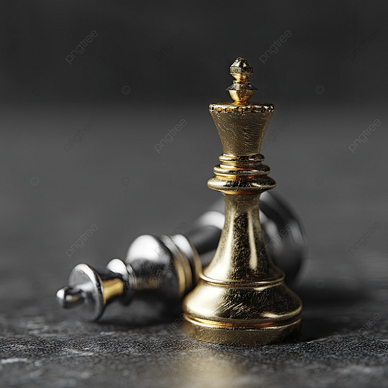

- REGOLE DI GIOCO
- Assegna dei calciatori alle tue pedine tramite un draft (manuale o randomico)
- I pedoni non possono muoversi di due caselle!
- Non esistono mosse speciali, come l'en-passant o l'arrocco
- La scacchiera è 6x6, avrai a disposizione un solo cavallo e un solo alfiere
- Le pedine potranno mangiare quelle avversarie solo se 'migliori' di esse in una determinata statistica dei calciatori associati
- Le statistiche che permettono di prendere un pezzo nemico variano di turno in turno
- Il re può muoversi sotto scacco e non deve essere per forza difeso se attaccato
- Non esiste il pareggio! Anche in situazioni re contro re, uno dei due dovrà mangiare l'altro


- REGOLE MERCATO E ROSA
- Ogni calciatore può essere acquistato dal mercato trasferimenti, e può essere posseduto solo da un utente
- Ogni utente ha a disposizione 100 crediti iniziali, che potrà utilizzare per comprare nuovi calciatori
- Ogni volta che una partita termina, il vincitore riceve 20 crediti
- Se un utente possiede dei calciatori della sua rosa, egli ha la garanzia che quei determinati giocatori compariranno durante il suo draft